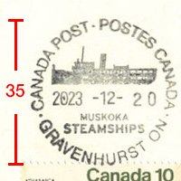

Gravenhurst STN Main pictorial cancel
Muskoka Steamships · New
- Status
- Active
- Run dates
- ? to present
- Design
- "MUSKOKA STEAMSHIPS"; steamship
- Ink colour
- Black
- Designer
- Unknown
- Post office
- Gravenhurst STN Main
101 - 1 Muskoka Rd N
Gravenhurst, ON
P1P 1A0 - Subjects
- ship, steamship, vessel, transportation
Collect it by mail. Send your stamped covers, with a stamped return envelope, to the post office address above. How to collect pictorial cancels by mail · en français
 Gravenhurst STN MainOld
Gravenhurst STN MainOld Newmarket STN MainNewmarket Clock Tower
Newmarket STN MainNewmarket Clock Tower Beeton PO2002
Beeton PO2002 Beeton PO2014
Beeton PO2014 Beeton PO2026
Beeton PO2026 Tottenham POTrain, flower, grass
Tottenham POTrain, flower, grass